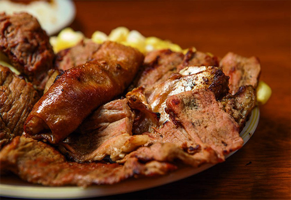

Sullka
Ingredientes
- 1 Kilo de carne de res Frigor
- Sal y pimienta a gusto
- 2 tomates
- 1 cebolla
- 1 queso pequeño
- 1 ramita de quirquiña
- Mote para acompañar
Preparación
Cortar la carne en tiras largas y condimentar con la sal y la pimienta. Luego asarla a la plancha. Preparar una ensalada con la cebolla, tomate, hojas de quirquiña y el queso. Servir la carne acompañada de mote, choclo y ensalada.